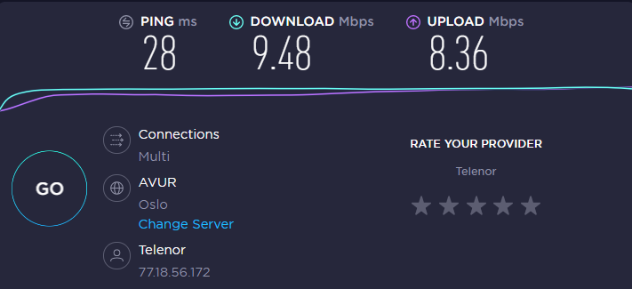
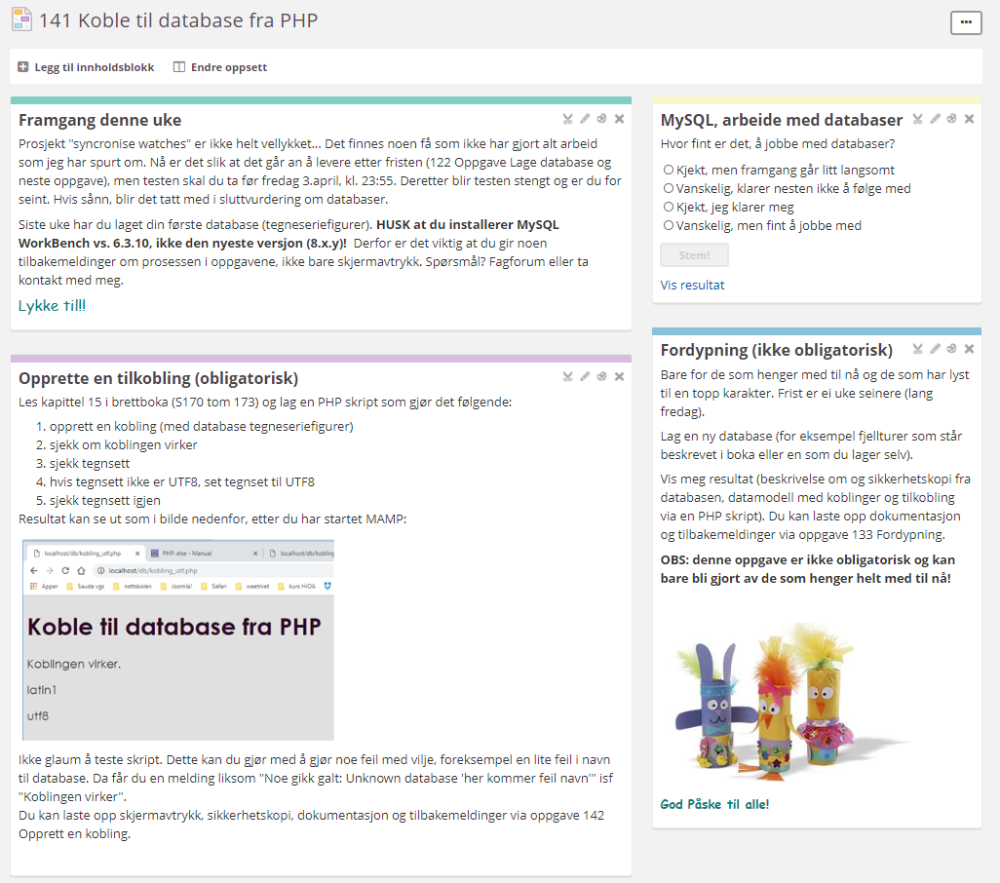
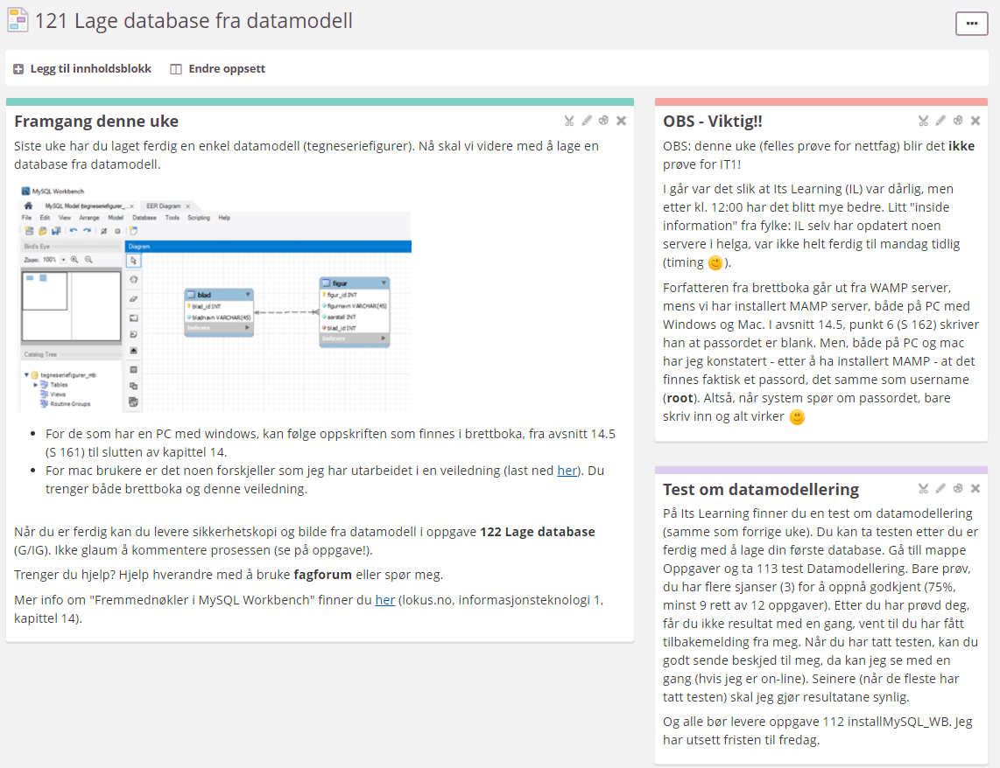
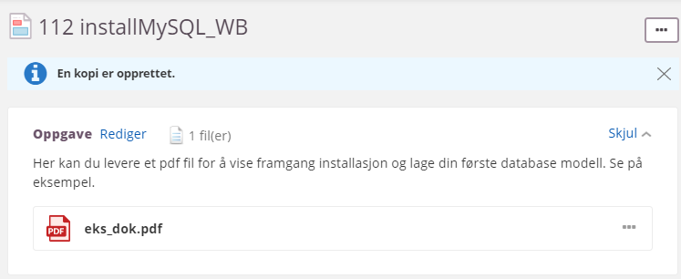
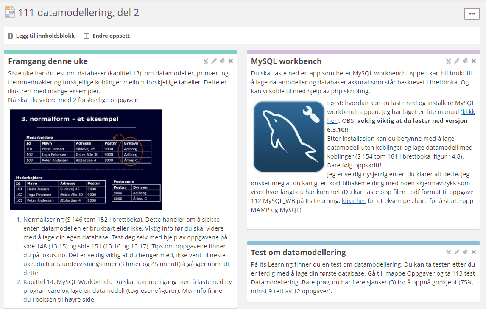

Siden Its Learning ikke alltid virker som det skal legger jeg ut planer og oppgaver her (quick & dirty). Da vet du hva innhold og oppgavene inneholder og kan du begynne med ukens oppgave. Her kan du sjekke hvordan det går med Its Learning. Når dette ser bra ut kan du levere på Its Learning. Når Its Learning svikter enne, test din egne internetforbindelse med speedtest og klikk på GO! Resultat blir samlet, se på bilde nedenfor (mmmhhh, ikke verst på hjemmekontor ;-))

Det er viktig og obligatorisk at du leverer arbeid, jeg trenger vurderinger til å sette sluttkarakter. Det er ikke så viktig at du leverer på rett tid, jeg setter tidfrist, men du kan levere arbeid etter fristen har gått! Når du lurer på noe, send beskjed (Its Learning og når dette ikke virker: 98063823).
Nå (22.mars, kl. 19:53; Its Learning er grønn, derfor) har jeg sjekket Its Learning, hvor langt dere har kommet med innlevering av oppgavene / test. Nesten alle har levert oppgave 112 installMySQL_WB, så bra. Men, det finnes noe få som har problemer med installasjonen osv. Testen har ikke alle tatt, omtrent halvparten. Men alle fikk godkjent til nå :) Nesten ingen har levert oppgave 122 Lage database. Aalt i alt tenker jen nå at det blir tid til å synkronisere klokker. Dette betyr at jeg ikke legger ut nye oppgaver denne uke, alle kan jobbe med testen og oppgave 122 Lage database. Frist blir fredag, dd. 27.mars. Og når du er ferdig kan du bruke tid til noe ant i forbindelse med skulearbeid. Og da har jeg litt mer tid å hjelpe de som trenger hjelp og ikke minst kollegaer for å komme i gang med nettundervisning! OK? Når du lurer på noe, ta kontakt...



